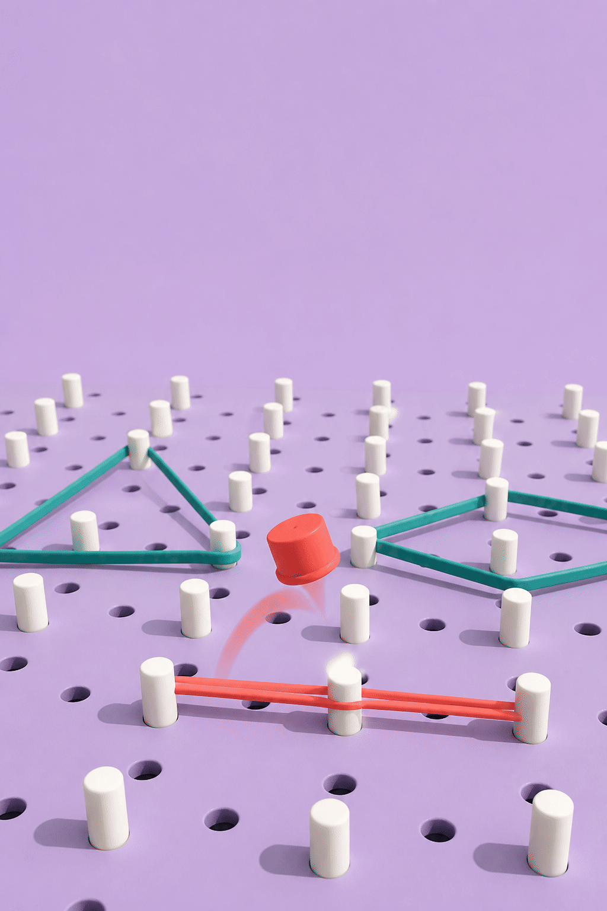

1. 빨간 링이 도는 점 ㄱ의 짝(대응점) 못을 손가락으로 눌러요. 누른 못이 곧 답이에요.
2. 누르고 나면 도형이 포개지는 모습이 나와요. 합동은 옮겨서, 선대칭은 축을 따라 접어서, 점대칭은 중심으로 180° 돌려서 겹쳐요. 점 ㄱ이 닿는 못이 짝이에요.
3. 막대에 이 문제 남은 시간과 전체 남은 시간이 숫자로 나와요.
4. 짝이 아닌 못을 누르면 목숨이 하나 줄어요. 목숨 3개, 90초예요.
손가락이 가리키는 흰 못을 누르면 그 못으로 뛰어요. 누른 못이 곧 답이에요. 지금은 시간이 멈춰 있어요.